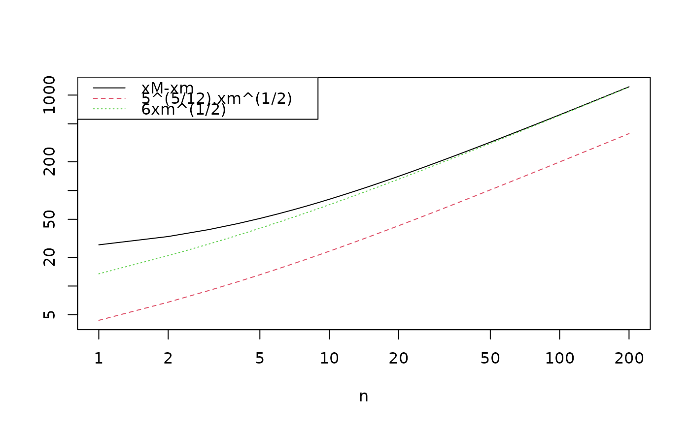

A class of multiplicative magic squares due to Cilleruelo and Luca
cilleruelo.RdCilleruelo and Luca give a class of multiplicative magic squares whose behaviour is interesting.
Details
$$ \left( \begin{array}{cccc} (n+2)(m+0) & (n+3)(m+3) & (n+1)(m+2) & (n+0)(m+1)\\ (n+1)(m+1) & (n+0)(m+2) & (n+2)(m+3) & (n+3)(m+0)\\ (n+0)(m+3) & (n+1)(m+0) & (n+3)(m+1) & (n+2)(m+2)\\ (n+3)(m+2) & (n+2)(m+1) & (n+0)(m+0) & (n+1)(m+3) \end{array} \right) $$
References
Javier Cilleruelo and Florian Luca 2010, “On multiplicative magic squares”, The Electronic Journal of Combinatorics vol 17, number 8
Examples
is.magic(cilleruelo(5,6))
#> [1] FALSE
is.magic(cilleruelo(5,6),func=prod)
#> [1] TRUE
f <- function(n){
jj <-
sapply(
seq(from=5,len=n),
function(i){cilleruelo(i,i-4)}
)
xM <- apply(jj,2,max)
xm <- apply(jj,2,min)
cbind(xM-xm , 5^(5/12)*xm^0.5 , 6*xm^0.5)
}
matplot(f(200),type='l',log='xy',xlab='n',ylab='')
legend(x="topleft",legend=c("xM-xm","5^(5/12).xm^(1/2)","6xm^(1/2)"),
lty=1:3,col=1:3)
